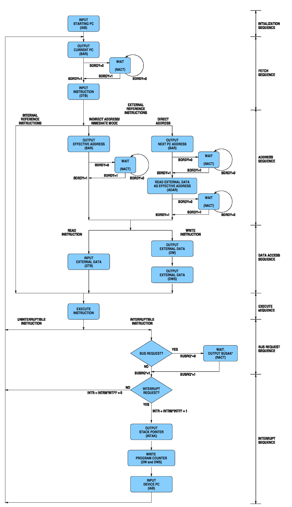

This diagram is adapted from the diagram that GI published in its CP-1600 data sheet. Many details have been added to this diagram that were omitted in the GI version of the diagram (notable, with respect to Direct-Addressing Mode instructions and their use of ADAR).
Not shown are the states for the various NACT spacing cycles that the CP-1600 introduces, other than those introduced for wait states due to BDRDY. Also not shown are the state transitions for reading Double-Byte Data using SDBD.
